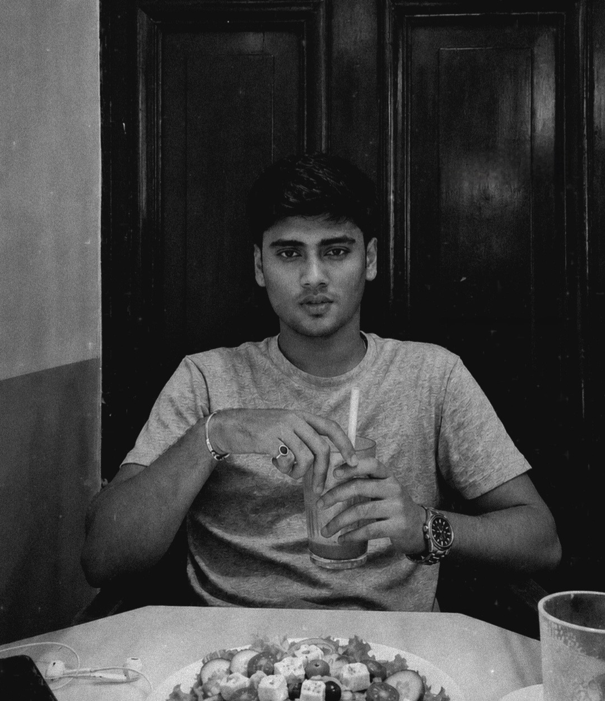
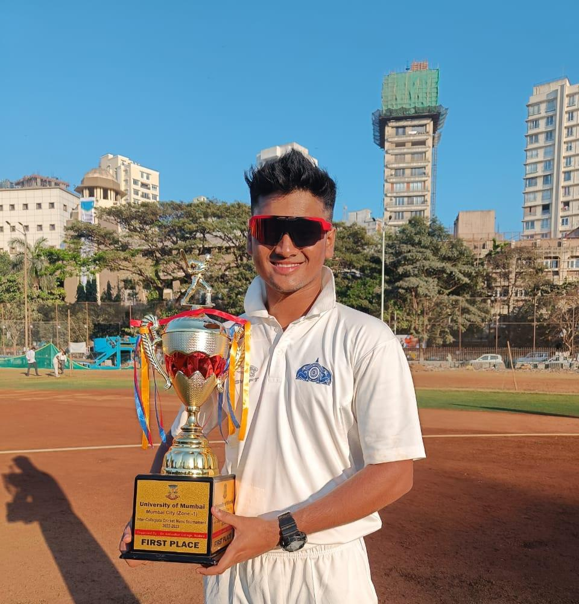
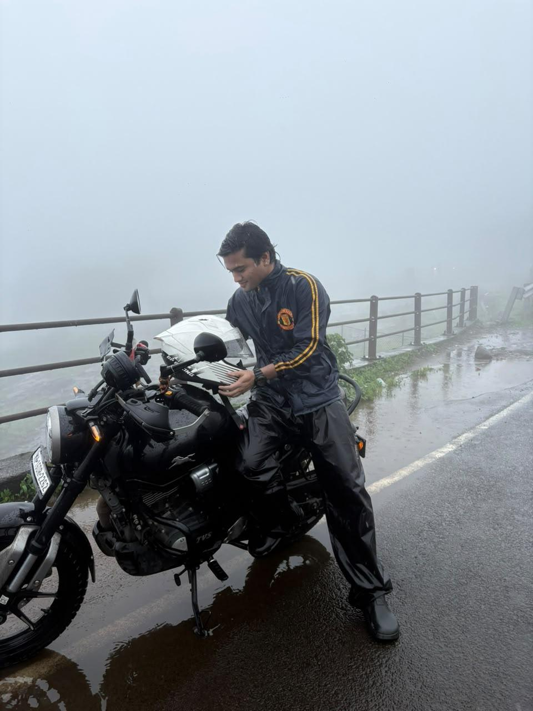
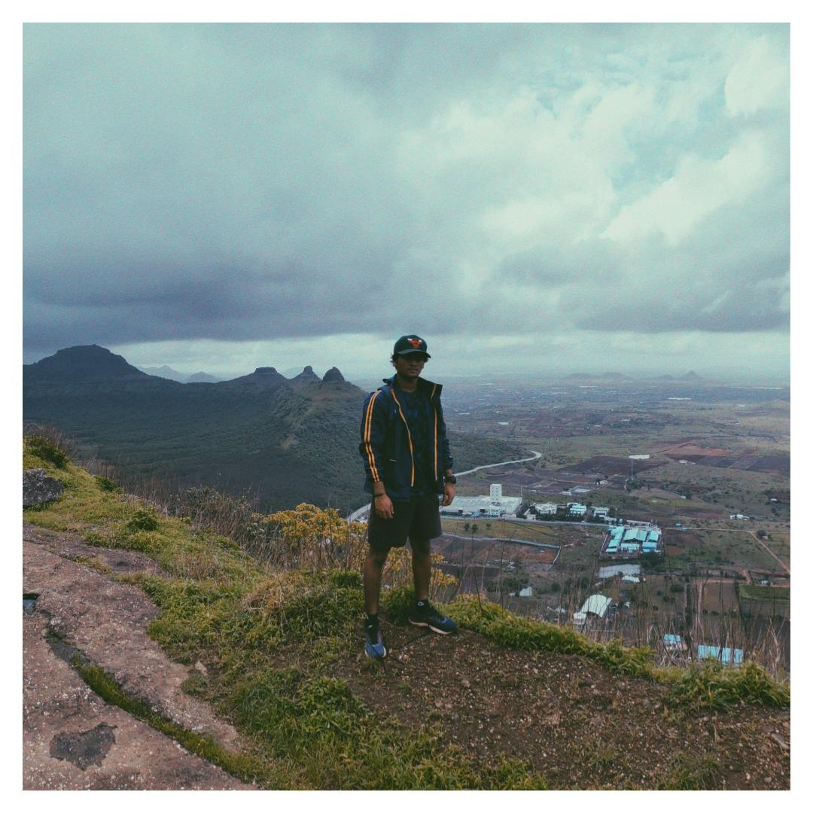
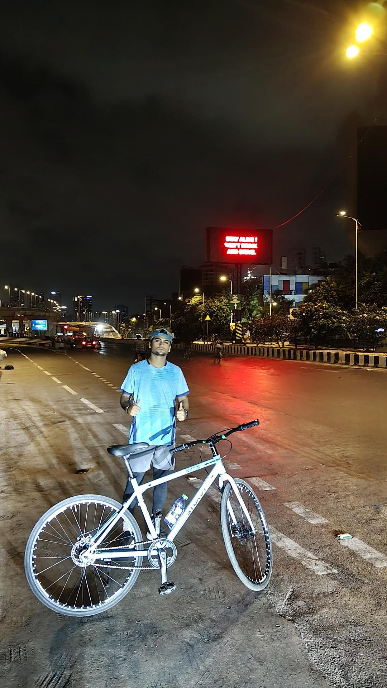
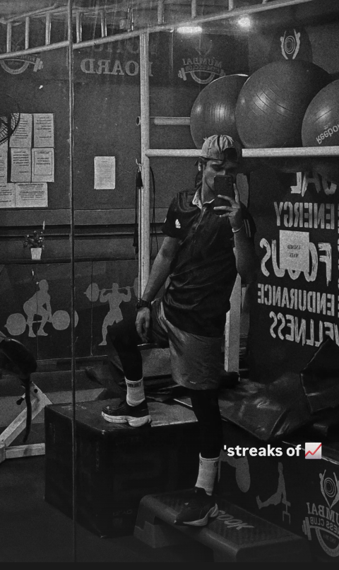

“I write the system before I design the screen.”
MCA, completed 2026 at K. J. Somaiya Institute of Management, Somaiya Vidyavihar University, with a 7.61 CGPI — alongside a six-month UI/UX Design internship at T&M AI and IT Solutions. Before that, a B.Com — commerce background, not a design-school one, which shows up in how I work: requirement documents and written specs before pixels.
Alongside the internship I ran a 30-day longitudinal study on emotional variation across the menstrual cycle, wrote it up as a co-authored research paper now under peer review, and designed the product from its findings. That is the part of my work I would most want to be asked about: it is the only project where I owned the research as well as the design, and it is where I learned to state what the data cannot support.

Feb – Jul 2026. Enterprise SaaS across HR-tech, EdTech and sales-intelligence, under director-set timelines, working directly with developers who had already shipped a technical-first version of each product.
Four of seven builds were HR-tech, which is why the employee lifecycle — hiring, onboarding, attendance, exit — is the domain I can talk about in most depth. Alongside them: two marketing sites, the AI Vision21 corporate site and the HireVision showcase.
Structured review sessions with the industry mentor, product team and domain experts — 2–3 rounds per module, with feedback triaged before anything got fixed. Nielsen's ten heuristics ran as a self-evaluation checklist on every module.
Limited direct access to real end users — a genuine limitation of an internship timeline. Persona assumptions were checked against proxy feedback from domain experts and product managers instead. That gap is stated here rather than implied away.
I don't think of these as hobbies. They're the same instinct the work runs on: prepare properly, read the situation, then commit — and keep showing up on the days it isn't fun.




